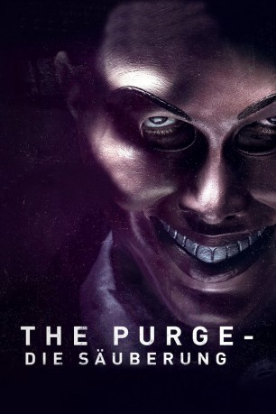

#3707 The Purge - Die Säuberung
Alternativ: The Purge
 
 IMDB-Wertung: 5.7 / 10
IMDB-Wertung: 5.7 / 10  Metascore: 0
Metascore: 0 
In einem von der Kriminalität beherrschten Amerika sieht sich die Regierung riesigen Problemen ausgesetzt: Weil die Gefängnisse überfüllt sind und die Anzahl der Straftaten anders kaum noch in den Griff zu bekommen ist, greift man zu einer radikalen Maßnahme: Es wird einmal im Jahr eine 12-Stunden-Frist eingeführt, in der jedes Verbrechen, egal ob Diebstahl oder Mord, legal wird und damit auch keine Strafe nach sich zieht. Die Polizei kann nicht gerufen werden und auch die Krankenhäuser verweigern jede Hilfe innerhalb dieser zwölf Stunden. Das soll den Bürgern die Möglichkeit geben, ihre Probleme zu lösen, ohne mit Konsequenzen rechnen zu müssen. Als ein Einbrecher das Versteck von James Sandin, seiner Frau Mary und ihren gemeinsamen Kindern entdeckt, wird eine schicksalsträchtige Kette von Ereignissen in Gang gesetzt: Für James und seine Familie scheint es fast unmöglich zu sein, die Nacht zu überstehen ohne selbst zu Tätern zu werden.
Jahr: 2013
Dauer: 85 Minuten
FSK: 16
Land: USA Studio: Universal PicturesTonspuren: DTS - ,
Untertitel: Deutsch,
Auflösung: 1080p (1920x800) Größe: 6461 MB
Genre: Thriller, Horror
Regisseur: James DeMonaco
Drehbuch: Andrey Gavrilov
Soundtrack:
Darsteller:
 Ethan Hawke als James Sandin
Ethan Hawke als James Sandin Lena Headey als Mary Sandin
Lena Headey als Mary Sandin- Max Burkholder als Charlie Sandin
- Adelaide Kane als Zoey Sandin
 Edwin Hodge als Bloody Stranger
Edwin Hodge als Bloody Stranger Rhys Wakefield als Polite Stranger
Rhys Wakefield als Polite Stranger- Tony Oller als Henry
- Arija Bareikis als Mrs. Grace Ferrin
- Tom Yi als Mr. Cali
 Chris Mulkey als Mr. Halverson
Chris Mulkey als Mr. Halverson- John Weselcouch als Freak Interrupting
 Alicia Vela-Bailey als Female Freak
Alicia Vela-Bailey als Female Freak- David Basila als George , uncredited
- Nathan Clarkson als Freak , uncredited
- Aaron Kuban als Freak , uncredited
- Chester Lockhart als Freak , uncredited
- Tyler Osterkamp als Freak , uncredited
 Karen Strassman als Newscaster , uncredited
Karen Strassman als Newscaster , uncredited- Tisha French als Mrs. Halverson
- Dana Bunch als Mr. Ferrin
- Peter Gvozdas als Dr. Peter Buynak
- Boima Blake als Freak #1 , uncredited
- Rj Wolfe als Freak , uncredited
Datei: X:\4-Tetralogie(M-Z)\Purge\Purge - Die Säuberung, The (2013, FSK16, 1920x800).mkv seit 23.05.2016
Festplatte: HD Collection-3(N-Z)-6(A-Z)
 Es gibt insgesamt 7 Filme in der Gruppe '4-Tetralogie(M-Z)\Purge'
Es gibt insgesamt 7 Filme in der Gruppe '4-Tetralogie(M-Z)\Purge'